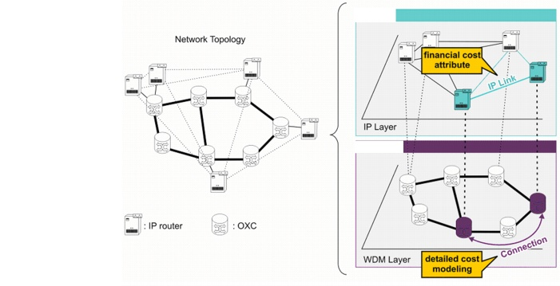

Transport-Layer Cost Allocation > Background: Layer-2/3 Links Supported by a Transport Layer
Background: Layer-2/3 Links Supported by a Transport Layer
SWIM enables you to model a Layer-2/3 network that is supported by an underlying Transport network . SWIM models the relationship between the two networks:
- Layer-2/3<—>Transport node mapping models the connection of Layer-2/3 to transport-layer equipment. For example, an IP router might be mapped to a SONET DXC.
- Layer-2/3<—>Transport connection mapping models the Transport connections between Transport nodes that correspond to Layer-2/3 endpoints. For example, a 10G Ethernet link might be carried over an STS-7-21c connection in the underlying SONET network.
Obviously, there are financial costs associated with this type of SONET/SDH connection. SP Guru Transport Planner uses a detailed cost model to calculate this cost, as described in Cost Modelling in SP Guru Transport Planner. In SP Guru Network Planner, each link has a "financial cost" attribute. When a Layer-2/3 link is supported by a transport network connection, its associated cost can be incorporated using the transport_link_pricer design action that is part of SWIM (see transport_link_pricer Design Action). This design action uses the cost models in SP Guru Transport Planner to calculate the cost of the Transport connection; then it updates the "financial cost" attribute of the Layer-2/3 link supported by that connection. The workflow to do this is described in Procedure 7-1-Configuring and Running the transport_link_pricer Design Action .
Figure 7-1 Cost Modelling in SP Guru Network Planner and SP Guru Transport Planner

| Home © 1987-2007 OPNET Technologies, Inc. All Rights Reserved. This software may be covered by one or more U.S. Patents. See complete patent notice in the Legal Notices section. OPNET Support Center |